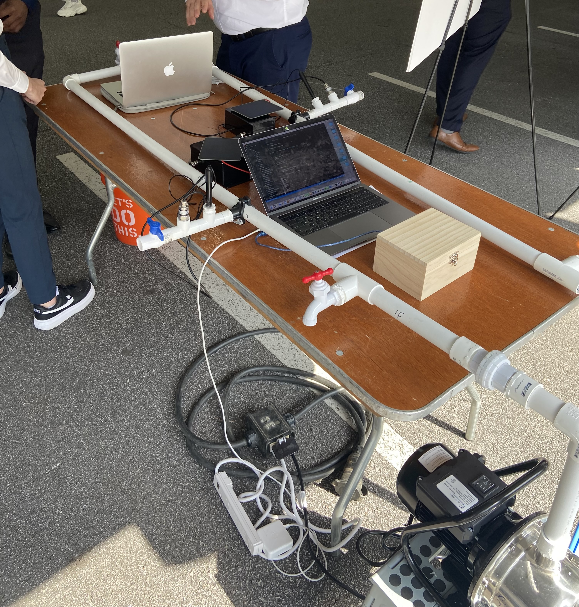
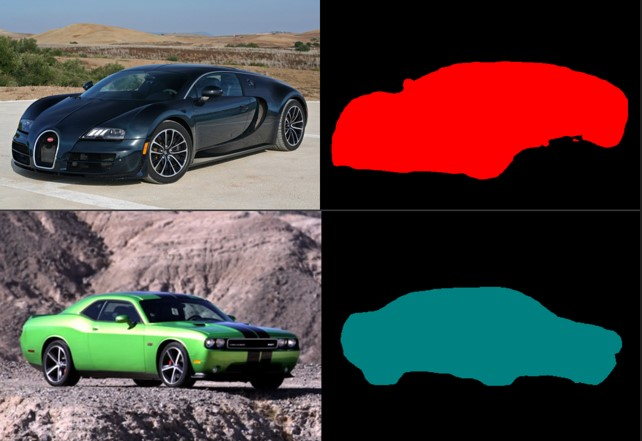
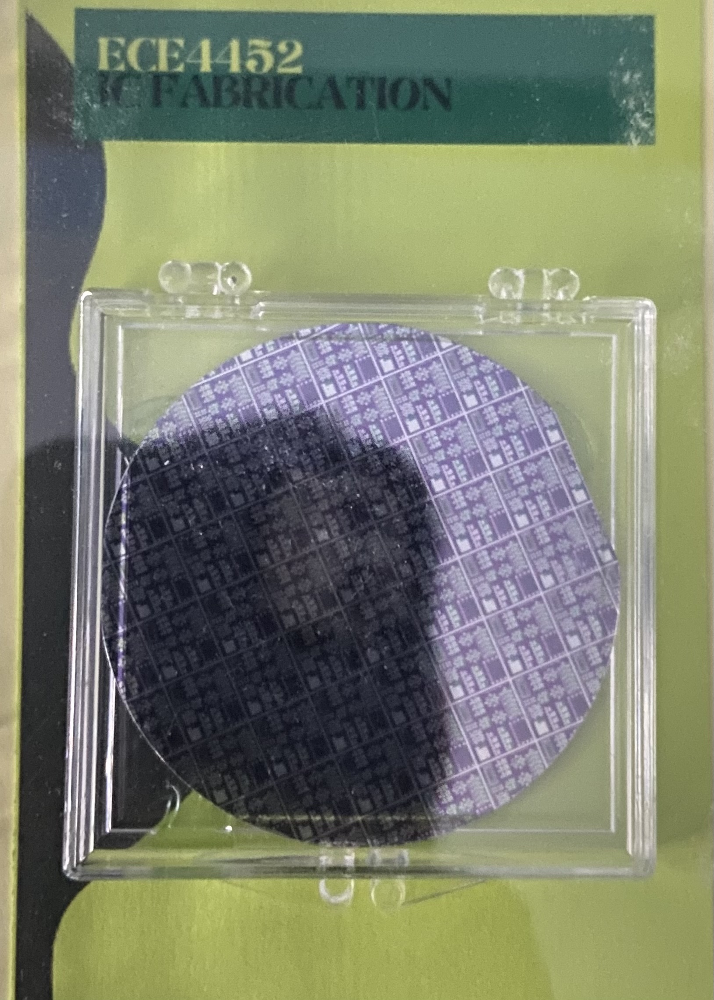

Projects
Smart Pipe System (Senior Design I & II)

This is my final project at Georgia Tech, where we developed a device that detects leaks, changes in pressure, and checks water quality via pH sensor in pipes. It was a team project involving electrical engineers and computer engineers, spanning two semesters. Our goal was to create an affordable device accessible to under-resourced countries. Many cities in rural areas lack the infrastructure to monitor pipe issues and water safety effectively. Instead of performing routine checks manually, our device network provides a notification system to alert users to potential problems.
My part in this project was to help code the notification system and connect the device to AWS. We used AWS to host a website where users can view real-time data from each device, including a table of measurements. Additionally, I implemented a system to email users if there are any major discrepancies.
Our testing approach involved creating a simulation with two devices at different ends of a pipe, releasing water to observe pressure differences. Once the pressure was measured, the data was sent via LoRa to our receiver, which then uploaded it to a table in AWS. The system parsed the data over a range of times to detect any major discrepancies and notify the user. We applied the same process to monitor water quality.
Airplane Instrument Visualization
This was a team final project for a class called Embedded Systems. At the end of the year, we were tasked with using the knowledge we had gained throughout the year to create a device of our choice. Our idea was to replicate a smaller version of the head-up display used in fighter jets for passenger planes. We built a heads-up display projector unit that projects data directly onto the windshield, so the pilot doesn’t need to look down at their instruments.
To achieve this, we used an MBED. We integrated IMU data (gyroscope, magnetometer), GPS data (coordinates, current time, number of satellites connected, velocity, altitude, direction), and a barometric pressure sensor (temperature, pressure). All of this was displayed on a uLCD with a HUD to be shown on the windshield.
I mainly worked on the barometric sensor and assisted with debugging the other sensors to ensure they produced the correct outputs.
Image Segmentation

This was a team final project for a Machine Learning class. At the end of the semester, we were tasked with using the techniques we learned for a project. Our idea was to perform image segmentation on pictures of vehicles to identify their categories. We achieved this by using a convolutional neural network (CNN) on a dataset of vehicle images we found to pre-train it. After that, we applied transfer learning and filters to the pre-trained CNN to repurpose it for identifying generalized categories and highlighting them.
My involvement was to help with applying and researching different unsupervised learning methods and filters to see which one helped with the segmentation.
IC fabrication

In this class, we had the opportunity to learn the process of making an integrated circuit (IC). Over 14 weeks, we worked in the cleanroom, experiencing each step of the fabrication process firsthand. We learned how to calculate various wafer characterizations to ensure the reliability of our ICs. Before each masking process, we verified that our theoretical calculations matched the measured data. By the end of the year, each student successfully created their own IC.
NOTE
I want to thank all my teammates for making this a memorable experience. It was a pleasure to grow and learn together. If you need to validate my projects or view any code or reports, please contact me via email. To respect the privacy of my teammates' hard work, I have chosen to provide only basic information about each project. For more detailed insights, please reach out to me directly.